Interal
Инструменты
Indoeuropan vordes
индоевропейские слова
Associativ vordes
Ассоциативные слова
Internationalismes
Интернационализмы
Vordes of communités
Слова сообществ
Grammatic e brevi vordes
Грамматические и краткие слова
Alter vordes
Иные слова
Affixes
Аффиксы
Determinator of valen typ
Определитель типа значения